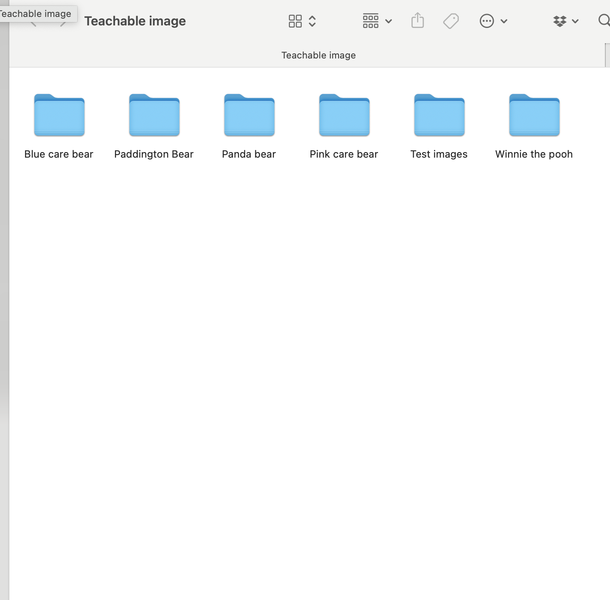

I wanted to improve my interface and learn more about teachable machines, so I switched from documenting my furry toy to creating different classes for teddy bears.
I decided to do 5 different types of teddy bear. Including Blue care bear,
pink care bear, Paddington Bear, Panda bear, and Winny the pooth bear.
Below are all the differnt bear types. Instead of using webcam, I am finding about 500 different images of the teddy bears on the internet (100 images of each type of bear), and I downloaded all the images manually one by one


All the pictures show the same kind of bear, but they come from different places and resources from the internet. I used pinterest, google and movie/video screenshot
After that, I found 30 distinct test images for each of the five teddy bear types. These images are all differ from the 500 images used for the Teachable Machine.

I also categorized all the 500 images into 5 folders by their bear type, and I have a separate folder for the 30 test images
Below is how I categorized them by folder
Uploaded all the images to teachable machine. I am curious what the test result may be compare with using the webcam

Finished training. I texted all the 30 test images, and The test result seems to be very precise


After I finish training the teachable machine and receive the result, It generate the P5js code
I used the generated P5js code to create my P5js model
Attached is the link to P5js code
Link to P5js.You can test with the P5js model If you hold a image of one type of the bear in front of your camera, the result should be accurate.
Below is a video showing how I test with P5js
From the link to teachable machines, you can upload an image of the bear to see the result.
Link to teachable machine